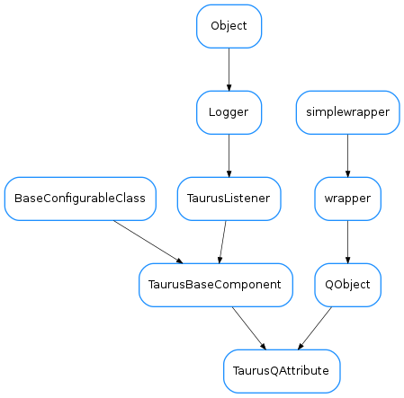

TaurusQAttribute¶

-
class
TaurusQAttribute(xmodel=None, id=None)[source]¶ Bases:
PyQt4.QtCore.QObject,taurus.qt.qtgui.base.taurusbase.TaurusBaseComponentA listener for taurus attributes. It stores the value in a numpy array and emits a dataChanged signal when the data has changed.
-
cref_RegExp= <_sre.SRE_Pattern object>¶
-
handleEvent(src, evt_type, val)[source]¶ Handles Taurus Events for this curve
See:
TaurusBaseQAttr.handleEvent()
-
preProcessTransformation(trstring)[source]¶ parses the transformation string and creates the necessary symbols for the evaluator. It also connects any referenced qAttrs so that the transformation gets re-evaluated if they change. :type trstring: :class:~`str` :param trstring: a string to be pre-processed
Return type: :class:~`tuple` <:class:~`str`, :class:~`bool`> Returns: a tuple containing the processed string and a boolean indicating if the preprocessing was successful. if ok==True, the string is ready to be evaluated
-
pyVar_RegExp= <_sre.SRE_Pattern object>¶
-